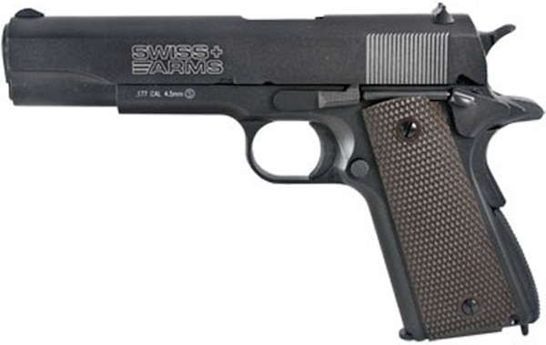

총물리에
권총
기관단총
소총
자동소총
기관총
권총

총기명 : Colt M1911
종류 : 반자동권총
국가 : 미국
개발 : 존 브라우닝
개발년도 : 1911년
생산 : 콜트
생산년도 : 1911년~현재
생산 수 : 270만정 이상
사용 년도 : 1911년~현재
사용 국가 : 미국 외 다수 국가
사용된 전쟁 : 1차, 2차, 한국전쟁, 배트남전쟁, 걸프전쟁, 기타 미군이 참전 전쟁
파생형 : M1911A1, M1911A2 등
코딩야학을 통해서 열심히 공부하자